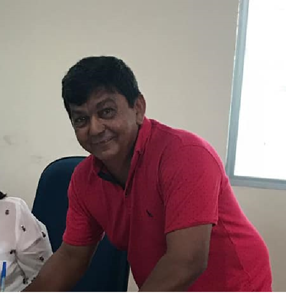
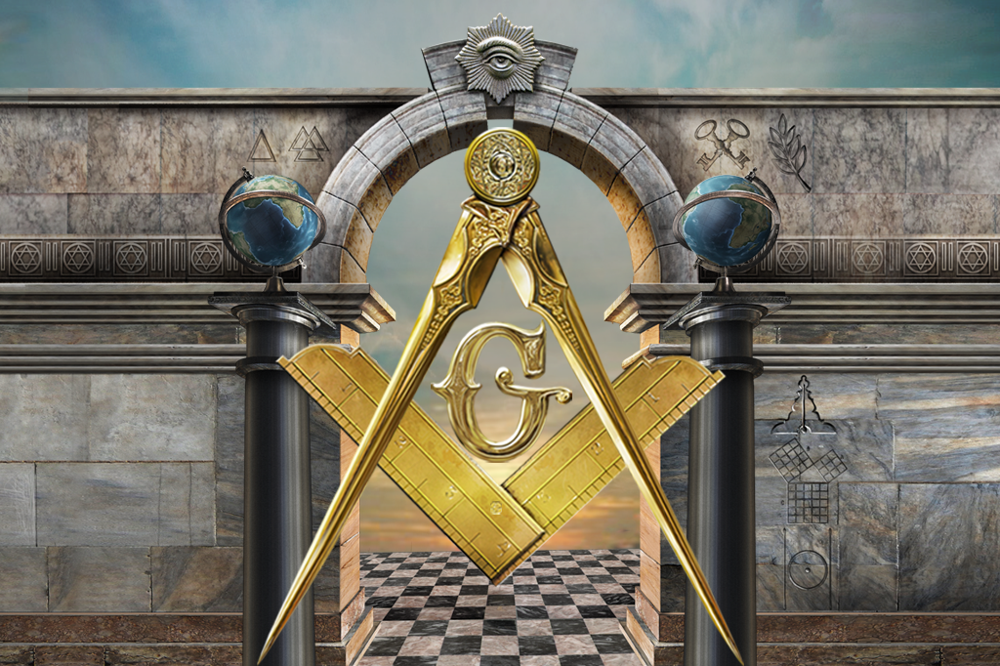
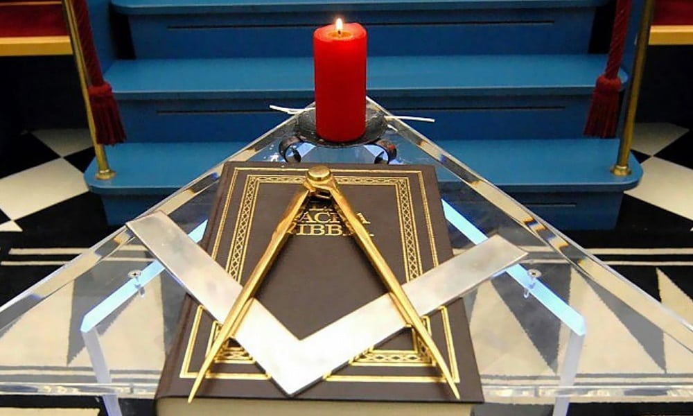
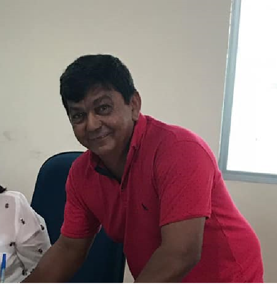
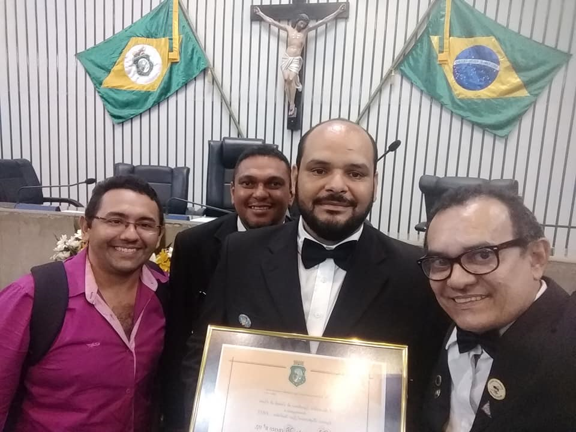

Luzes da Loja
Veneravel Mestre Ir:.Emerson Peixoto
Iniciado na massonaria no ano de 1999, filho natural da cidade de jaguaretama....

Primeiro Vigilante Ir:.Dilton Maia

Segundo Viglante Ir:.Vanizio Maia
A Maçonaria é a maior e mais antiga organização fraterna do mundo. Acredita-se que tenha se originado com as guildas de construtores da Europa medieval e, posteriormente, se expandido para admitir aqueles que não pertenciam realmente ao comércio. Os pedreiros literais são chamados de operativos, enquanto aqueles que não trabalharam na pedra foram chamados de pedreiros especulativos. A Maçonaria mantem sua tradição, ritos e rituais praticamente inalterados a eculos, onde os graus mantêm-se os três graus das guildas de artesanato medieval, os de "aprendiz", "companheiro" e "mestre maçom". Masonria é um modo de vida. Uma sociedade de amigos e irmãos reunidos em uma Fraternidade, uma Fraternidade aberta a todos os homens bons que desejam se tornar homens melhores. É uma organização voluntária. Não solicita adesão. Não é uma sociedade secreta. Mas como todas as fraternidades tem algum trabalho ritualístico secreto. Não tem finalidades ou objetivos secretos e seus membros não escondem o fato de serem membros, nem se gabam de serem membros de um grupo social exclusivo. Não é uma igreja, nem uma religião e não tem a intenção de ser um substituto para uma religião, a Maçonaria exige que um homem acredite em Deus e na imoralidade da Alma. Todas as reuniões são abertas e encerradas com oração, e o Livro da Lei Sagrada, a Bíblia Sagrada, é aberto no altar durante todas as reuniões, pois o próprio fundamento da Maçonaria é o preceito da paternidade de Deus e da fraternidade do homem.
Os maçons são homens de bom caráter que se esforçam para se aprimorar e tornar o mundo um lugar melhor. Os maçons (também conhecidos como maçons) pertencem à maior e mais antiga organização fraterna do mundo. Hoje, existem mais de dois milhões de maçons na América do Norte. Mason representa virtualmente todas as ocupações e profissões, mas dentro da Fraternidade, todos se encontram como iguais. Os maçons vêm de diversas ideologias políticas, mas se encontram como amigos. Os maçons vêm de várias crenças e credos religiosos, mas todos acreditam em um Ser Supremo. Muitos dos primeiros patriotas da América do Norte eram maçons. Treze signatários da Constituição e quatorze presidentes dos Estados Unidos, incluindo George Washington, eram maçons. No Canadá, o Pai da Confederação, Sir John A. MacDonald, era maçom, assim como outros líderes canadenses e americanos.
A experiência maçônica encoraja os membros a se tornarem melhores homens, melhores maridos, melhores pais e melhores cidadãos. Os laços fraternos formados na Loja ajudam a construir amizades duradouras entre homens com objetivos e valores semelhantes. Além de seu foco no desenvolvimento e crescimento individual, a Maçonaria está profundamente envolvida em ajudar as pessoas. O maçom da América do Norte contribui com mais de dois milhões de dólares por dia para causas beneficentes. Esta filantropia representa um exemplo incomparável do compromisso humanitário da grande e honrada Fraternidade. Grande parte dessa assistência vai para pessoas que não são maçons. Algumas dessas instituições de caridade são projetos vastos. Os Shrine Masons (Shiners) operam a maior rede de hospitais para crianças queimadas e com problemas ortopédicos do país, e nunca há uma taxa para tratamento. Os maçons do Rito Escocês mantêm uma rede nacional de mais de 150 clínicas, centros e programas para distúrbios da linguagem na infância. Muitas outras organizações maçônicas patrocinam uma variedade de filantropia, incluindo programas de bolsas para estudantes, e realizar atividades de serviço público nas comunidades. Os maçons também desfrutam da comunhão uns com os outros e com suas famílias em atividades sociais e recreativas.
Veneravel Mestre Ir:.Emerson Peixoto
Iniciado na massonaria no ano de 1999, filho natural da cidade de jaguaretama....
Primeiro Vigilante Ir:.Dilton Maia
Segundo Viglante Ir:.Vanizio Maia
"Saudações fraternas do Oriente. Estou firme no roposito de crescimento em mais um periodo de administração. Continuaremos a trabalhar para melhorar a Loja este ano, com nosso foco principal nas colunas que sustentam e adornam nosso templo, repassando ensinamentos e trocando conhecimentos em busca de um futuro melhor para humanidade. WB Emerson Peixoto Venerável Mestre....."
